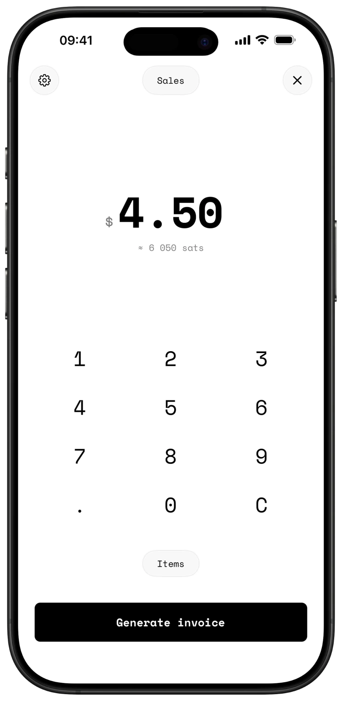

Registra una vendita
Digita l’importo o crea un carrello dal catalogo. Scegli sat, BTC, EUR, USD o CHF, genera la richiesta Lightning e verifica il pagamento sul dispositivo.
Come incassare alla cassaTrustless Terminal
Inserisci il prezzo in euro, mostra il QR al cliente e ricevi bitcoin sul tuo iPhone. Al cliente basta un wallet compatibile con Lightning.

Il lavoro alla cassa
Digita l’importo o crea un carrello dal catalogo. Scegli sat, BTC, EUR, USD o CHF, genera la richiesta Lightning e verifica il pagamento sul dispositivo.
Come incassare alla cassaIn Sales puoi ritrovare un pagamento, condividere una ricevuta e autorizzare un rimborso totale o parziale. Per la riconciliazione, esporta le vendite con i cambi registrati.
Consulta vendite e rimborsiAttiva la modalità cassiere prima di passare il dispositivo al personale. Con un backup cifrato dei dati di Terminal puoi recuperare catalogo e storico delle vendite se cambi telefono.
Esegui il backup di Terminal
Memorizza i prodotti che vendi ogni giorno con i rispettivi prezzi. Al cambio turno, chi è alla cassa può selezionare un espresso dal catalogo senza dover ricordare il prezzo o digitarlo di nuovo.

Tocca gli articoli per aggiornare le quantità se l’ordine cambia. Due espressi e due biscotti diventano un unico totale che il cliente paga con un solo pagamento Lightning.
Inserisci 4,50 € e mostra il QR. Il cliente lo inquadra con il proprio wallet Lightning e conferma l’importo.
Consegna il caffè quando questa conferma appare sul tuo Terminal. Se la connessione si interrompe, riapri la richiesta originale e verificane lo stato prima di chiedere un altro pagamento.
Apri la vendita pagata da 4,50 € per condividere la ricevuta. A fine turno la ritrovi nel file delle vendite esportato per quel periodo.
Domande frequenti
Risposte per chi configura Terminal e per chi lo usa durante il turno.
Tutte le guidePuò pagare con un wallet Lightning compatibile. Prima di consegnare l’ordine, controlla sul tuo dispositivo che la vendita risulti pagata. Leggi la guida per chi lavora in cassa.
Sono inclusi incassi, cinque articoli a catalogo, modalità cassiere, storico delle vendite, rimborsi, ricevute di base, esportazione CSV e backup cifrato. Terminal Pro aggiunge articoli illimitati, report dettagliati con impostazioni salvate, loghi e modelli di ricevuta riutilizzabili. Confronta Terminal e Terminal Pro.
Quando torna la connessione, riapri la vendita e ricontrolla lo stato. Prima di chiedere al cliente di riprovare, verifica l’esito del pagamento originale. Come verificare l’esito di un pagamento.
Terminal genera una ricevuta di pagamento e conserva i dati delle vendite. Chiedi al commercialista e al fornitore del registratore di cassa come documentare vendite e rimborsi in bitcoin secondo la procedura prevista per la tua attività. Come leggere i dati delle vendite.